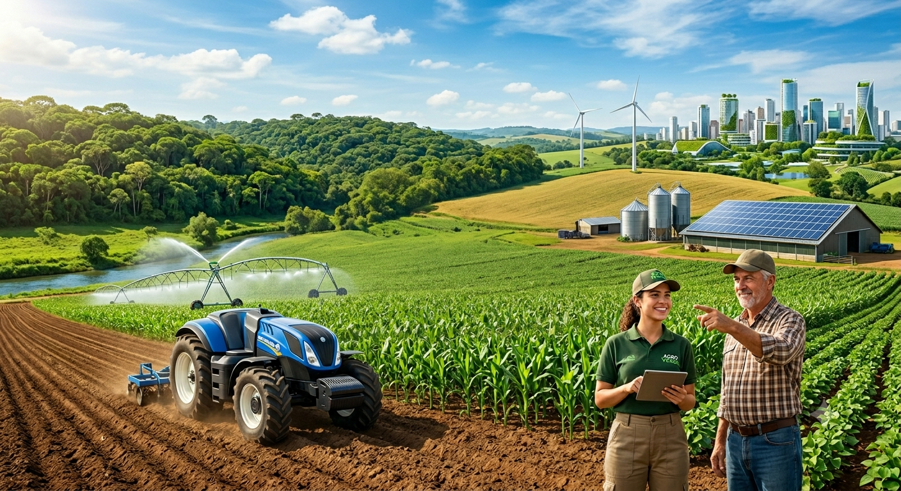

A Força do Campo na Construção de um Amanhã Verde
Como a tecnologia e a inteligência artificial estão salvando o planeta e otimizando a produção de alimentos.
Conhecer a solução
EcoCrop a solução
Criamos um ecossistema digital que conecta sensores IoT (Internet das Coisas) instalados no solo diretamente ao celular do produtor.
- água na medida certa: O sistema avisa o momento exato de irrigar
- IA de proteção: Algoritmos identificam pragas por fotos antes que elas se espalhem, reduzindo o uso de defensivos químicos.
- Carbono zero: Monitoramento que ajuda a manter o solo saudável para absorver mais CO₂ da atmosfera.